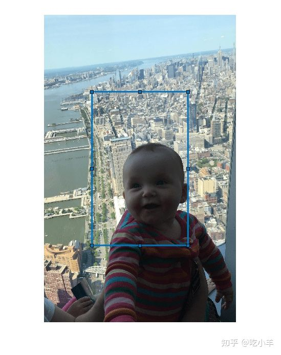
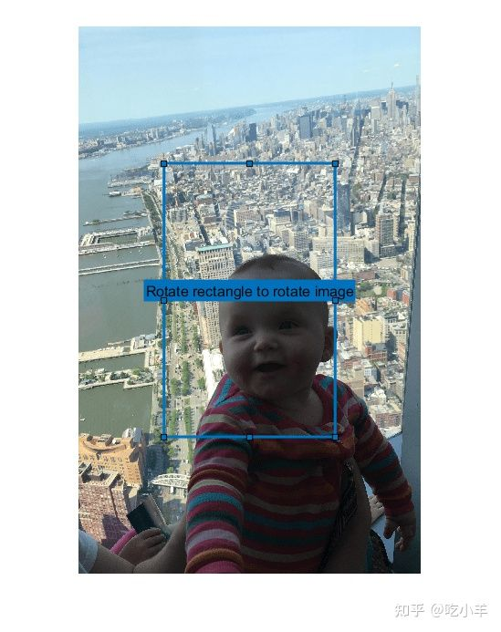
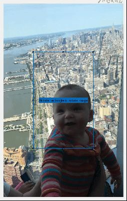

Home
此示例展示了如何通过使用带有回调函数的矩形 ROI 来旋转图像，该回调函数会在您移动 ROI 时调用imrotate。
图像旋转是一个常见的预处理步骤。在本示例中，图像需要以未知量旋转以将地平线与 x 轴对齐。您可以使用imrotate函数来旋转图像，但您需要先知道旋转角度。通过使用交互式可旋转的 ROI，可以实时旋转图像以匹配 ROI 的旋转。
创建可旋转矩形 ROI
显示图像。
im = imread('baby.jpg');
hIm = imshow(im);
获取图像的大小。
sz = size(im);
将矩形 ROI 的位置和大小确定为 [x y w h] 形式的 4 元素向量。ROI 将绘制在图像的中心，并具有图像宽度和高度的一半。
pos = [(sz(2)/4) + 0.5, (sz(1)/4) + 0.5, sz(2)/2, sz(1)/2];
在指定位置创建一个可旋转的 Rectangle ROI，并将 Rotatable 属性设置为true。然后，可以通过在矩形的角附近单击并拖动来旋转它。当 ROI 移动时，它会广播一个MovingROI事件。通过添加该事件的侦听器和在事件发生时执行的回调函数，可以旋转图像以响应 ROI 的移动。
h = drawrectangle('Rotatable',true,...
'DrawingArea','unlimited',...
'Position',pos,...
'FaceAlpha',0);

在标签中放置提示。
h.Label = 'Rotate rectangle to rotate image';

添加侦听 ROI 移动的侦听器。
addlistener(h,'MovingROI',@(src,evt) rotateImage(src,evt,hIm,im));
在回调函数中调用 imrotate
定义在矩形 ROI 移动时执行的回调函数。此函数检索 ROI 的当前旋转角度，在具有该旋转角度的图像上调用imrotate，并更新显示。该函数还会更新标签以显示当前旋转角度。
function rotateImage(src,evt,hIm,im)
% Only rotate the image when the ROI is rotated. Determine if the
% RotationAngle has changed
if evt.PreviousRotationAngle ~= evt.CurrentRotationAngle
% Update the label to display current rotation
src.Label = [num2str(evt.CurrentRotationAngle,'%30.1f') ' degrees'];
% Rotate the image and update the display
im = imrotate(im,evt.CurrentRotationAngle,'nearest','crop');
hIm.CData = im;
end
end

======================================================================
我的测试结果及程序
下面是我测试的代码：

注：本文根据MATLAB官网内容修改而成。